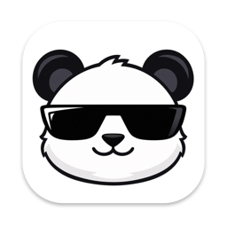

Descargar Roro Touch
Lesky Estudio · app de selección, revelado y retoque para Mac.
1Descargar
Versión más reciente · ver todas
Necesitas una Mac con chip Apple (M1 o más nuevo) y macOS 14 Sonoma o más nuevo. No funciona en Mac con Intel.
2Instalar
- Abre la carpeta Descargas y haz doble clic en Roro-Touch-Instalador.dmg.
- En la ventana que se abre, arrastra Roro Touch sobre la carpeta Aplicaciones.
- Si pregunta, elige Reemplazar. Tus ajustes y la llave de Lesky se quedan.
- Expulsa el instalador: clic derecho sobre «Roro Touch» en el escritorio → Expulsar.
Los modelos de IA ya vienen dentro de la app. No hay que instalar nada más.
3Abrirla la primera vez
macOS avisa porque la app es de Lesky Estudio y no de la App Store. Es normal y se hace una sola vez.
- Abre Aplicaciones y haz doble clic en Roro Touch.
- Sale un aviso: Apple no pudo verificar la app, o es de un desarrollador no identificado. Toca Aceptar (o Listo). No toques «Trasladar a la papelera».
- Abre → Ajustes del Sistema → Privacidad y seguridad.
- Baja hasta Seguridad. Junto al aviso de que se bloqueó Roro Touch, toca Abrir igualmente.
- Pon la contraseña de la Mac y toca Abrir igualmente otra vez. Listo: ya abre siempre.
¿Tu Mac tiene macOS 14 Sonoma?
Ahí es más corto: clic derecho sobre Roro Touch → Abrir → Abrir.
¿No aparece «Abrir igualmente» o dice que la app «está dañada»?
Abre la app Terminal, pega esta línea y presiona Enter. Después abre Roro Touch normal.
xattr -dr com.apple.quarantine "/Applications/Roro Touch.app"La primera vez que se conecte a Lesky, el Llavero pide permiso. Elige Permitir siempre. Las versiones nuevas no vuelven a preguntar.
4Conectar con Lesky
Cada Mac lleva su propia llave de Lesky. Los pasos están en «Cómo instalar», dentro de la ventana del instalador (pasos 3 a 5):
- Crear la llave de esa Mac en Lesky.
- Pegarla en Roro Touch: Ajustes (⌘ ,) → Cola Lesky → Pegar otra clave…
- Tocar Probar conexión. Debe decir Conectada a Lesky ✓.
Para el dueño: publicar una versión nueva
Se hace en la iMac que arma Roro Touch. Necesita el certificado «Lesky Estudio» en el Llavero y gh con sesión iniciada.
- Ten
mainde Roro Touch con los cambios que quieres entregar. - Abre Terminal y corre:
~/Proyectos/roro-touch-descargas/publicar.sh - El script arma el instalador desde
main, revisa que sea la app del estudio, firmada y para chip Apple, y lo sube como versión nueva. - Esta página muestra la versión nueva sola en un minuto. El botón siempre baja la última.
Opciones
publicar.sh --sin-armarsube el instalador que ya está endist/, sin volver a compilar.publicar.sh "Qué cambió"agrega una nota a la versión.
Cada versión queda guardada en Versiones. Para volver a una anterior, descarga su .dmg desde ahí.